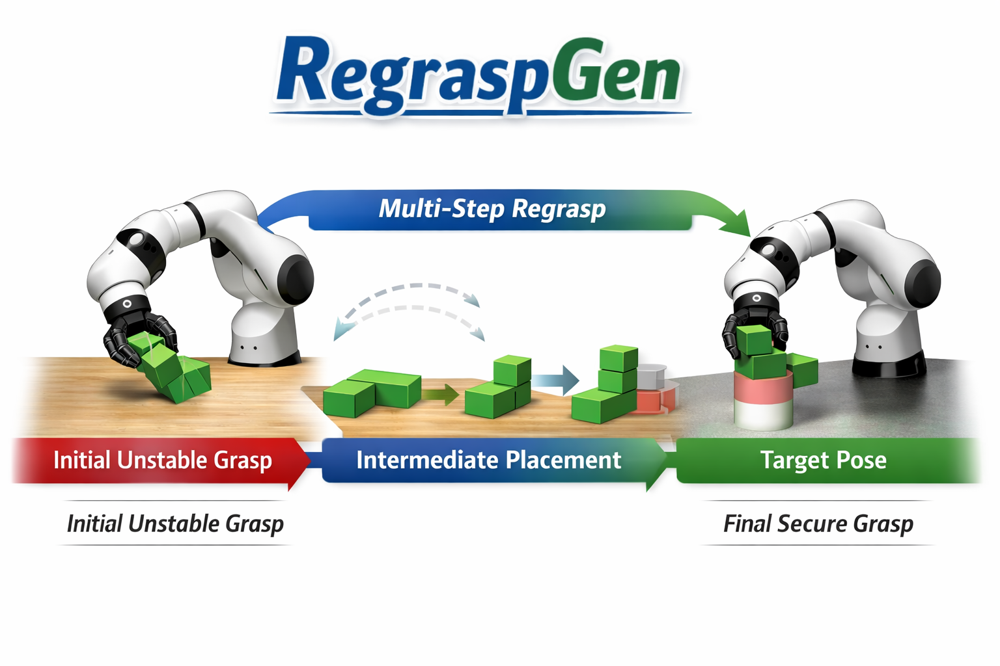
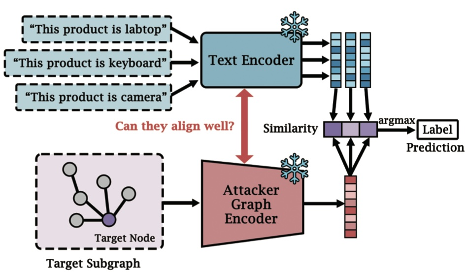

|
Ruopeng Huang I am a Master's student in Computer Science (Intelligent Robotics) at the University of Southern California. I am currently a researcher in Prof. Erdem Biyik's LiraLab at USC. I am also a visiting student at the TASL at UC Riverside, working with Prof. Jiachen Li. And I previously did research at USC's RRoS Lab advised by Prof. S. K. Gupta. I received my bachelor's degree in Computer Science and Technology from Beijing University of Posts and Telecommunications. My research interests include robotic manipulation, robot perception, and robot learning, with an emphasis on building robust robotic systems for real-world deployment. 🚀 I am currently applying for PhD programs for Fall 2026. |
Research |
|
SyncTwin: Fast Digital Twin Construction and Synchronization for Safe Robotic Grasping
Ruopeng Huang, Boyu Yang, Wenlong Gui, Jeremy Morgan, Erdem Biyik, Jiachen Li (Under Review) paper / project page We present SyncTwin, a fast digital twin construction and synchronization framework for safe robotic grasping in dynamic and partially observed environments. |
|
|  |
RegraspGen: Learning General Pick and Place via Synthetic Regrasp Demonstration Generation
Mingxuan Yan*, Ruopeng Huang*,Litian Gong, Zechun Liu, Jiachen Li (In Preparation) RegraspGen introduces a synthetic regrasp demonstration generation pipeline that enables generalizable pick-and-place policies across diverse object geometries and task settings. |
|
Robotic Compliant Object Prying Using Diffusion Policy Guided by Vision and Force Observations
Jeon Ho Kang, Sagar Joshi, Ruopeng Huang, Satyandra K. Gupta IEEE Robotics and Automation Letters (RA-L), 2025 (Accepted) paper / project page / code This work presents a diffusion-policy-based approach for compliant object prying, integrating vision and force observations for robust contact-rich manipulation. |
|
|
Energy-Aware Planning for Legged Robots Performing Logistics Tasks in Agriculture Applications
Shengqiang Chen, Yiyu Chen, Ruopeng Huang, Zishen Wei, Quan Nguyen, Satyandra K. Gupta IEEE Transactions on Automation Science and Engineering (T-ASE), 2025 (Under Review) We study energy-aware motion planning for legged robots in agricultural logistics scenarios, balancing task efficiency and energy consumption in wild environments. |
|
|  |
A Systematic Study of Model Extraction Attacks on Graph Foundation Models
Haoyan Xu*, Ruizhi Qian*, Jiate Li, Ruopeng Huang, Yushun Dong, Minghao Lin, Hanson Yan, Zhengtao Yao, Qinghua Liu, Junhao Dong, Yue Zhao, Mengyuan Li IEEE Symposium on Security and Privacy (S&P), 2026 (Under Review) paper This paper provides the first systematic investigation of model extraction attacks on graph foundation models, analyzing vulnerability patterns and defense implications. |
Work Experience
|

{kind=link}
Course Projects
|
Service & SkillsService
Skills
|
Hardware Experience
|
|
Webpage inspired by Jon Barron |